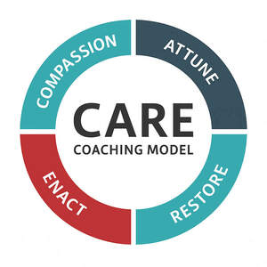

Trade Mark Journal No.2025/041 10 October 2025
UK00004270801 29 September 2025 (35,41,44)

Limitations This application protects the use of the CARE Coaching Model brand name, framework, and associated materials as described above. It does not restrict the general use of the words “compassion,” “attuned,” “restore,” or “enact” when used independently or in unrelated contexts. The protection applies to the model as a whole and its use as a structured, branded coaching methodology within the fields of leadership, management, healthcare, social care, education, consultancy, and organisational development.
- Class 35
- Career advisory services (other than education and training advice); Career information and advisory services (other than educational and training advice); Employment counselling and consultancy services; Employment consultancy; Employment consultancy services; Personnel management and employment consultancy; Recruitment consultancy services.
- Class 41
- Education and training consultancy; Training consultancy; Education and training; Training and education services; Education and training services; Vocational education and training services; Training and further training consultancy; Consultancy services relating to the education and training of management and of personnel; Education, teaching and training; Management training consultancy services; Consultancy relating to vocational skills training; Career advisory services (education or training advice); Consultancy services relating to the development of training courses; Linguistic education and training services; Education services relating to vocational training; Provision of training and education; Provision of education and training; Business training consultancy services; Computer education training services; Education and training in the field of business management; Career counselling [training and education advice]; Training or education services in the field of life coaching; Educational and training services; Vocational training services; Career counselling relating to education and training; Educational consultancy; Consultancy services relating to engineering training; Guidance (Vocational -) [education or training advice]; Vocational guidance [education or training advice]; Education services relating to business training; Consultancy services relating to training; Education and training services in relation to business management; Computer education training; Vocational training; Teacher training services; Training services relating to management consultancy; Professional consultancy relating to education; Engineering training services; Training services; Consultancy services relating to engineering education; Educational consultancy services; Organisation of training courses; Training; Management training services; Vocational training courses (Provision of -); Academy education services; Academy services (Education -); Education academy services; Organisation of training seminars; Career and vocational training; Consultancy services relating to the training of employees; Education academy services for teaching construction drafting; Education and training in the field of automotive engineering; Engineering training college services; Postgraduate training courses relating to engineering technology; Employment training; Provision of training courses in personal development; Organisation of conferences relating to vocational training; Career information and advisory services (educational and training advice); Postgraduate training courses relating to management studies; Educational and training services relating to healthcare; Courses (Training -) relating to research and development; Vocational skills training; Business training services; Education services relating to the training of personnel in food technology; Educational and training programs in the field of risk management; Management of education services; Management education services; Education and training services in the field of occupational health and safety; Postgraduate training courses; Organisation of training; Medical training and teaching; Vocational skills training (Provision of -); Instructional and training services; Practical training services; Education; Training services in the field of project management; Business training; Consultancy relating to physical fitness training; Consultancy services relating to the analysis of training requirements; Organisation of training courses relating to design; Education and training services in relation to real estate management; Courses for the development of consulting skills; Training courses; Courses (Training -) relating to accountancy; Manufacturing training services; Educational services for providing courses of education; Vocational education; Education and instruction services; Courses (Training -) relating to management; Fitness training services; Education services; Courses (Training -) relating to engineering; Education and training in the field of music and entertainment; Training in business management; Courses (Training -) relating to finance; Computer training advisory services; Educational services relating to sales training; Arrangement of training courses in teaching institutes; Educational certification services, namely, providing training and educational examination; Education academy services for teaching acting; Educational and training services relating to sport; Provision of training courses; Training courses (Provision of -); Education academy services for teaching languages; Recreation and training services; Computerised training in career counselling; Coaching [training]; Providing courses of training; Providing training courses on business management; Aerobics training services; Organisation of seminars relating to training; Provision of training services for business; Organisation of seminars relating to education; Teaching and training in business, industry and information technology; Education and training in the field of occupational health and safety; Training in the field of business management; Provision of training services for industry; Training services relating to business management; Training services relating to finance; Providing of training, teaching and tuition; Computer training services; Training in business skills; Career counseling [education]; Training in philosophy; Residential training courses; Courses (Training -) relating to banking; Advisory services relating to training; Personal development training; Organisation of computer related training courses; Conducting of educational courses in business management; Organising of education seminars; Personal training services; Training services for nurses; Education advisory services relating to accountancy; Training services for nannies; Courses (Training -) relating to insurance; University education services; Courses (Training -) relating to science.
- Class 44
- Consultancy services in the field of nutrition; Nutrition consultancy; Health consultancy.
Clement Leadership Development Ltd